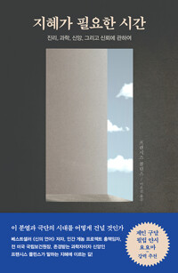

"이 책을 선정해 놓고 부들부들 떨었다"는 진행자의 너스레처럼, 다소 논쟁적일 수 있는 책의 「진리」 장을 붙들고 모인 금요일 밤이었다. 정보와 언론에 대한 불신에서 출발한 나눔은 역화 효과와 토론 문화, 말의 출처를 지나 교회 안 세대와 공간의 갈등까지 흘러갔고, "기독교의 진리는 문장이 아니라 인격"이라는 데서 그날의 매듭이 지어졌다. 처음 온 이들과 각자의 기도 제목을 하나하나 품는 긴 합심 기도로 마쳤고, 진행자는 "맨날 두세 명 앉아 있다가, 오늘은 너무 풍성하네요"라며 웃었다.
토론은 이기는 게임이 아니다 — 역화 효과에서 시작된 나눔
첫 나눔은 정보와 언론에 대한 불신이 컸다고 스스로 말해온 한 참석자에게서 시작됐다. 그는 진리·과학·신앙·신뢰를 지나 지혜로 가는 이 책의 여정이 그 불신의 마음을 "잘 긁어주는" 느낌이었다고 했다. 특히 진리 장에서 만난 '역화 효과'가 오래 남았다고 했다. 토론은 내 의견으로 상대를 관철시키는 싸움이 아닌데, 관철시키려 들수록 A는 더 A로, B는 더 B로 멀어지더라는 것이다. 자신도 그런 방식으로 대화해 왔음을 돌아보며, 소통도 의견 교환도 결국 사랑이고 그 관점으로 사람을 대해야겠다는 결론에 이르렀다고 고백했다.
훈련받지 못한 토론, '나'에게 갇힌 문화
이어진 나눔은 우리 세대가 건강한 토론을 배운 적이 없다는 자성으로 옮겨갔다. 미디어에서 본 토론은 늘 싸움으로 끝났고, 상대 논거를 이성적으로 판단해 받아들이기보다 내 주장을 관철하는 데만 익숙하다는 것이다.
한 참석자는 유아 교육 현장의 경험을 빌려, 너와 나를 인지하고 우리가 속한 사회를 인정하는 세계시민 교육의 기본 덕목이 정작 어른들의 세계에서 깨져 있다고 짚었다. 혼자 사는 삶이 예능이 되고 내 감정과 신념만 중요해진 문화, 시선이 온통 내 안에만 머물러 주변도 하나님도 보지 못하는 시대에 대한 안타까움이 오갔다.
말의 출처를 묻다 — 다름만 말하고 듣지 않는 자리들
또 다른 참석자는 코로나 이후 어느 공동체에서든 부딪히는 양극화 이야기와 함께, 각기 다른 배경의 신앙인들이 한자리에 모였는데 서로 다름만 말할 뿐 아무것도 받아들이지 않던 자리에 있었던 충격을 나눴다. 듣지 않는 대화 속에서는 나 역시 온전할 수 없다는 경각심, 진리와 점점 멀어지는 세상에서 우리는 어떻게 진리를 분별할 것인가 하는 질문이 뒤따랐다.
진행자는 말의 출처를 파고들라는 책의 문제의식을 받아, 내가 하는 말 가운데 스스로 소화한 것은 얼마 되지 않는다는 한 성경학자의 말을 처음 들었을 때 자신도 크게 찔렸다며 자기 점검의 필요를 보탰다.

어른들을 끌어안는 교회, 공동체를 물들이는 언어
화제는 자연스럽게 교회 안의 세대 문제로 넘어갔다. 진행자는 시대마다 교회가 그 시대의 아픔을 끌어안았듯, 이제는 점점 고립되어 가는 어른 세대를 교회가 목회적으로 품어야 할 때라고 했다. 어른들의 눈물과 수고 덕에 우리가 지금 이 테이블에 앉아 있기 때문이라는 것이다.
교회 공간을 둘러싼 갈등의 경험담도 나왔다. 부서 사이에 장소를 두고 날 선 말이 오가던 때, 그 한마디가 나오는 순간 공동체 전체의 마음이 그 언어에 물들더라는 이야기였다. 서로 쟁취하는 자리가 아니라 같이 살려고 도모하는 자리라는 원칙이, 앞서 나눈 토론 이야기와 정확히 포개졌다.
인격이신 진리, 그리고 권력을 욕망할 용기
진행자는 이날의 중심 문장을 여기서 꺼냈다. 우리는 서로 더듬어 가며 진리를 찾아가지만, 기독교의 진리는 관념이나 문장이 아니라 인격이신 예수 그리스도라는 것. 진리가 먼저 사랑으로 우리를 끌어안으셨기에, 그리스도인이야말로 백분을 토론하고도 마지막에 서로 축복하며 합심 기도로 마칠 수 있는 유일한 사람들이라고 했다.
푸코의 '진리는 권력 놀음'이라는 진단도 피해 가지 않았다. 순진하게 물러설 것이 아니라 그리스도인이 권위의 자리를 선하게 욕망해야 한다는, 권력이 진리를 만날 때의 아름다움을 우리가 보여주자는 다소 도발적인 권면이 이어졌다.
"이 저자도 별거 없구나" — 겸손한 거장, 그리고 서로를 위한 기도
다음 장인 과학을 미리 들춘 이들 사이에서 저자 이야기가 나왔다. 어릴 때부터 천재의 길을 걸었을 줄 알았던 저자가 실은 수없이 실패하다 하나님이 열어주신 기회로 그 자리에 섰을 뿐이라고 스스로 말하는 대목에서, 오히려 그 겸손이 좋았다는 반응이 모였다. 진행자는 똑똑한 머리도 지위도, 심지어 고난마저도 기독교는 책임감으로 읽는다는 말로 받았다.
모임 말미에는 한 참석자가 가족 어른의 신앙 회복을 위한 기도를 부탁했고, 진행자는 그 제목과 처음 온 이들, 그 자리의 한 사람 한 사람을 하나하나 품는 긴 기도로 밤 모임을 맺었다. 다음 모임은 연휴를 건너뛰고, 과학 장을 읽어 오기로 했다.